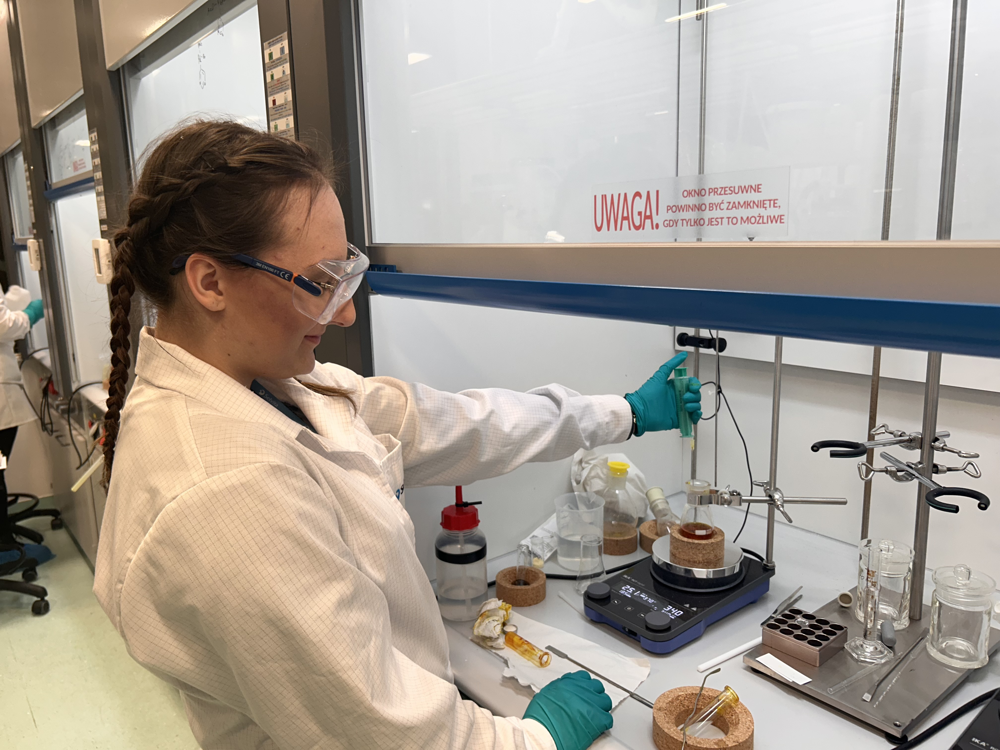
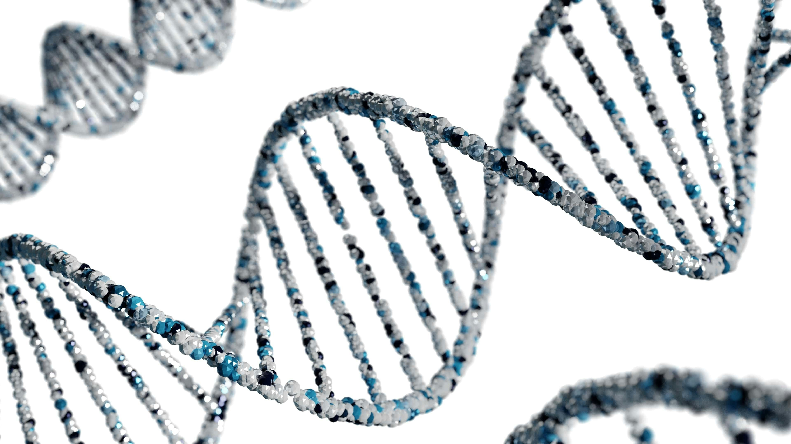

Programming
Python, R, NumPy, pandas, scikit-learn, TensorFlow
Code · Molecules · Data
I am a bioinformatics MSc student fascinated by the point where chemistry, biological data and computational tools meet. I enjoy turning complex molecular problems into precise, reproducible insights.


My background connects wet-lab chemistry with computational thinking. I like work that requires both chemical intuition and structured analysis: from molecular modeling and simulation outputs to Python programming, data processing and machine learning.

Bioinformatics allows me to combine what I enjoy most: chemical intuition, algorithms and careful analysis. I focus on molecular modeling and data-driven discovery by building and validating models that help explain how molecules behave and interact.
My goal is to support smarter experiments and faster research by connecting biological questions with reliable computational methods.
Python, R, NumPy, pandas, scikit-learn, TensorFlow
Molecular modeling, MD, docking, QM calculations, HPC workflows
Problem solving, reproducibility, biological interpretation
Selected work
A growing collection of projects combining bioinformatics, chemistry, machine learning and data analysis.
Master's thesis project using MED and DTSS analyses.
Completed project 02FAD molecular modeling and ML potential workflow.
Completed project 03Mini bioinformatics project focused on sequencing read quality analysis, filtering and trimming of FASTQ data.
Completed projectLet’s connect
I am open to research, bioinformatics, computational chemistry and data science opportunities.